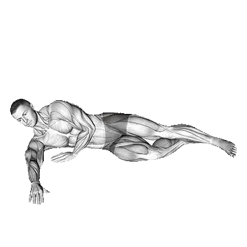

Floor Hip Abduction
Floor Hip Abduction é um exercício de pernas focado em Glúteo máximo. Você pode revisar repetições médias e padrões de repetições em uma página.

Repetições médias: Intermediário
Referência para uma pessoa de nível intermediário.
Homens
19
Mulheres
10
Repetições médias de Floor Hip Abduction
| Nível | ||
|---|---|---|
| Iniciante | < 1 | < 1 |
| Novato | 6 | 1 |
| Intermediário | 19 | 10 |
| Avançado | 37 | 20 |
| Elite | 57 | 31 |
Nota: estes valores estimam repetições médias que podem ser feitas em uma série. Peso corporal, amplitude, tempo e outros fatores pessoais podem afetar o desempenho. Veja as tabelas detalhadas abaixo.
Padrões de repetições de Floor Hip Abduction
Homens por peso corporal (lb) [Repetições]
| Peso corporal | Iniciante | Novato | Intermediário | Avançado | Elite |
|---|---|---|---|---|---|
| 110 | < 1 | 1 | 16 | 35 | 56 |
| 120 | < 1 | 3 | 17 | 35 | 55 |
| 130 | < 1 | 4 | 18 | 35 | 55 |
| 140 | < 1 | 5 | 18 | 35 | 54 |
| 150 | < 1 | 6 | 19 | 35 | 53 |
| 160 | < 1 | 7 | 19 | 35 | 53 |
| 170 | < 1 | 7 | 19 | 35 | 52 |
| 180 | < 1 | 7 | 20 | 35 | 51 |
| 190 | < 1 | 8 | 20 | 34 | 50 |
| 200 | < 1 | 8 | 19 | 34 | 49 |
| 210 | < 1 | 8 | 19 | 33 | 48 |
| 220 | < 1 | 8 | 19 | 33 | 47 |
| 230 | < 1 | 8 | 19 | 32 | 46 |
| 240 | < 1 | 8 | 19 | 32 | 45 |
| 250 | < 1 | 8 | 18 | 31 | 44 |
| 260 | < 1 | 8 | 18 | 30 | 43 |
| 270 | < 1 | 8 | 18 | 30 | 42 |
| 280 | < 1 | 8 | 18 | 29 | 42 |
| 290 | < 1 | 8 | 17 | 29 | 41 |
| 300 | < 1 | 8 | 17 | 28 | 40 |
| 310 | < 1 | 8 | 17 | 28 | 39 |
Homens por idade [Repetições]
| Idade | Iniciante | Novato | Intermediário | Avançado | Elite |
|---|---|---|---|---|---|
| 15 | < 1 | < 1 | 12 | 27 | 44 |
| 20 | < 1 | 5 | 18 | 35 | 54 |
| 25 | < 1 | 6 | 19 | 37 | 57 |
| 30 | < 1 | 6 | 19 | 37 | 57 |
| 35 | < 1 | 6 | 19 | 37 | 57 |
| 40 | < 1 | 6 | 19 | 37 | 57 |
| 45 | < 1 | 4 | 17 | 34 | 52 |
| 50 | < 1 | 2 | 14 | 30 | 47 |
| 55 | < 1 | < 1 | 11 | 25 | 41 |
| 60 | < 1 | < 1 | 8 | 21 | 35 |
| 65 | < 1 | < 1 | 5 | 16 | 29 |
| 70 | < 1 | < 1 | 1 | 11 | 23 |
| 75 | < 1 | < 1 | < 1 | 8 | 17 |
| 80 | < 1 | < 1 | < 1 | 4 | 12 |
| 85 | < 1 | < 1 | < 1 | < 1 | 9 |
| 90 | < 1 | < 1 | < 1 | < 1 | 6 |
Mulheres por peso corporal (lb) [Repetições]
| Peso corporal | Iniciante | Novato | Intermediário | Avançado | Elite |
|---|---|---|---|---|---|
| 90 | < 1 | < 1 | 8 | 17 | 28 |
| 100 | < 1 | 1 | 9 | 18 | 28 |
| 110 | < 1 | 2 | 9 | 18 | 28 |
| 120 | < 1 | 3 | 10 | 18 | 28 |
| 130 | < 1 | 3 | 10 | 18 | 27 |
| 140 | < 1 | 3 | 10 | 18 | 26 |
| 150 | < 1 | 4 | 10 | 17 | 26 |
| 160 | < 1 | 4 | 10 | 17 | 25 |
| 170 | < 1 | 4 | 10 | 17 | 24 |
| 180 | < 1 | 4 | 9 | 16 | 24 |
| 190 | < 1 | 4 | 9 | 16 | 23 |
| 200 | < 1 | 4 | 9 | 15 | 22 |
| 210 | < 1 | 3 | 9 | 15 | 22 |
| 220 | < 1 | 3 | 9 | 14 | 21 |
| 230 | < 1 | 3 | 8 | 14 | 20 |
| 240 | < 1 | 3 | 8 | 13 | 20 |
| 250 | < 1 | 3 | 8 | 13 | 19 |
| 260 | < 1 | 3 | 8 | 12 | 18 |
Mulheres por idade [Repetições]
| Idade | Iniciante | Novato | Intermediário | Avançado | Elite |
|---|---|---|---|---|---|
| 15 | < 1 | < 1 | 5 | 13 | 22 |
| 20 | < 1 | < 1 | 9 | 19 | 30 |
| 25 | < 1 | 1 | 10 | 20 | 31 |
| 30 | < 1 | 1 | 10 | 20 | 31 |
| 35 | < 1 | 1 | 10 | 20 | 31 |
| 40 | < 1 | 1 | 10 | 20 | 31 |
| 45 | < 1 | < 1 | 8 | 18 | 28 |
| 50 | < 1 | < 1 | 6 | 15 | 25 |
| 55 | < 1 | < 1 | 4 | 11 | 21 |
| 60 | < 1 | < 1 | 1 | 9 | 16 |
| 65 | < 1 | < 1 | < 1 | 5 | 12 |
| 70 | < 1 | < 1 | < 1 | 2 | 8 |
| 75 | < 1 | < 1 | < 1 | < 1 | 5 |
| 80 | < 1 | < 1 | < 1 | < 1 | 1 |
| 85 | < 1 | < 1 | < 1 | < 1 | < 1 |
| 90 | < 1 | < 1 | < 1 | < 1 | < 1 |
Nota: os valores da tabela são referências de repetições possíveis em uma série. Dados por peso corporal ajudam a estimar carga relativa, e dados por idade ajudam a observar tendências.
Músculos trabalhados
| Grupo | Músculos |
|---|---|
| Músculos principais | Glúteo máximo |
| Músculos secundários | Nenhum |
| Estabilizadores | Oblíquos externos |
| Pegada | Nenhum |
Registre e analise no app Shiba
Revise carga, repetições e progresso em um só lugar.
Como ler a tabela
| Nível | Descrição | Distribuição |
|---|---|---|
| Iniciante | Aprendeu a forma correta e treinou consistentemente por pelo menos 1 mês. | Base 5% |
| Novato | Treinou consistentemente por pelo menos 6 meses. | Top 80% |
| Intermediário | Treinou consistentemente por pelo menos 2 anos. | Top 50% |
| Avançado | Treinou consistentemente por mais de 5 anos. | Top 20% |
| Elite | Treinou especificamente este exercício por mais de 5 anos. | Top 5% |